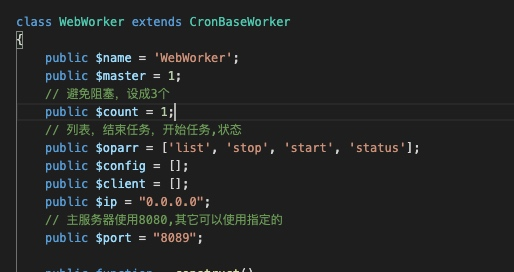

使用workerman在写一个cronjob项目，出现问题引发的wm分析。

配置个web的http worker
在代码里再请求curl 8089端口，即http://127.0.0.1:8089
为了调试，我们开启curl的debug功能
curl_setopt($ch, CURLOPT_VERBOSE, true); // curl debug
curl_setopt($ch, CURLOPT_STDERR, fopen(CRONPATH.'/Application/Log/curl.log', 'w+'));
$response = curl_getinfo( $ch );
测试正常连接百度是正常的，但连接127.0.0.1:8089一直在等待中
Warning: file_get_contents(http://127.0.0.1:8089/?op=cl_list&secret=b61e757422497ccaef7dab5d59b180dd): Failed to open stream: HTTP request failed! in /webwww/y/cronshow/Application/Library/Web.php on line 174
curl_start
exec
* Expire in 0 ms for 6 (transfer 0x558eac35eb10)
* Expire in 2000 ms for 8 (transfer 0x558eac35eb10)
* Expire in 2000 ms for 2 (transfer 0x558eac35eb10)
* Trying 127.0.0.1...
* TCP_NODELAY set
* Expire in 200 ms for 4 (transfer 0x558eac35eb10)
* Connected to 127.0.0.1 (127.0.0.1) port 8089 (#0)
> GET /?op=cl_list&secret=b61e757422497ccaef7dab5d59b180dd HTTP/1.1
Host: 127.0.0.1:8089
Accept: text/html,application/xhtml+xml,application/xml;q=0.9,*/*;q=0.8
Accept-Encoding: gzip, deflate
Accept-Language: en-US,en;q=0.5
Cache-Control: no-cache
Content-Type: application/x-www-form-urlencoded; charset=utf-8
User-Agent: Mozilla/5.0 (X11; Ubuntu; Linux i686; rv:28.0) Gecko/20100101 Firefox/28.0
X-MicrosoftAjax: Delta=true
* Operation timed out after 2000 milliseconds with 0 bytes received
* Closing connection 0
显示2秒之后断开
docker里开启strace调试
docker run --cap-add=SYS_PTRACE -it -v ~/code:/webwww --name php-fpm-8033 show/php-fpm:8.0.3
进入docker里查看
```
strace -tt -p 对应进程端口
可使用php job.php status查看workerman的worker端口
可以监测到连接8089的时候是-1
socket(AF_INET, SOCK_STREAM, IPPROTO_IP) = 8
connect(8, {sa_family=AF_INET, sin_port=htons(8089), sin_addr=inet_addr("127.0.0.1")}, 16) = -1 EINPROGRESS (Operation now in progress)
getpeername(8, {sa_family=AF_INET, sin_port=htons(8089), sin_addr=inet_addr("127.0.0.1")}, [128->16]) = 0
getsockname(8, {sa_family=AF_INET, sin_port=htons(53752), sin_addr=inet_addr("127.0.0.1")}, [128->16]) = 0
正常的情况下是0
connect(9, {sa_family=AF_INET, sin_port=htons(53), sin_addr=inet_addr("192.168.65.1")}, 16) = 0
这时候思考到workerman的count参数只开启了一个阻塞进程，故而改成3个进程即可。
通过这个事故，下定决定分析workerman源码
## 分析
我们先查看一下workerman的目录
.
├── _webwww_y_cronshow_job.php.pid
├── workerman
│ ├── Autoloader.php
│ ├── Connection
│ │ ├── AsyncTcpConnection.php
│ │ ├── AsyncUdpConnection.php
│ │ ├── ConnectionInterface.php
│ │ ├── TcpConnection.php
│ │ └── UdpConnection.php
│ ├── Events
│ │ ├── Ev.php
│ │ ├── Event.php
│ │ ├── EventInterface.php
│ │ ├── Libevent.php
│ │ ├── React
│ │ │ ├── Base.php
│ │ │ ├── ExtEventLoop.php
│ │ │ ├── ExtLibEventLoop.php
│ │ │ └── StreamSelectLoop.php
│ │ ├── Select.php
│ │ └── Swoole.php
│ ├── Lib
│ │ ├── Constants.php
│ │ └── Timer.php
│ ├── MIT-LICENSE.txt
│ ├── Protocols
│ │ ├── Frame.php
│ │ ├── Http
│ │ │ ├── Chunk.php
│ │ │ ├── Request.php
│ │ │ ├── Response.php
│ │ │ ├── ServerSentEvents.php
│ │ │ ├── Session
│ │ │ │ ├── FileSessionHandler.php
│ │ │ │ └── RedisSessionHandler.php
│ │ │ ├── Session.php
│ │ │ └── mime.types
│ │ ├── Http.php
│ │ ├── ProtocolInterface.php
│ │ ├── Text.php
│ │ ├── Websocket.php
│ │ └── Ws.php
│ ├── README.md
│ ├── Timer.php
│ ├── Worker.php
│ └── composer.json
└── workerman.log
上来来说
Connection 连接类
Events 网络事件类
Protocols 请求协议类
主要这三部分组成
核心文件主要是Worker.php，不得不佩服workerman作者，简单即精华。
所以我们从Worker.php文件开始说起

其实我们所有服务都是从runAll开始

一层层来分析一下runAll所做的事
## checkSapiEnv
主要是检查环境符不符合要求
## init
初始化主要生成master的pid文件和对应的log文件
Timer::init(); 初始化事件

注册并signal事件
这里要了解一下php的pcntl库
## parseCommand
主要解析命令行的输入
登录php job.php start
即对'start','stop','restart','reload','status','connections'等做接收处理
## daemonize
判断是否需要守护进程，如约需要pcntl_fork当前一下
## initWorkers
初始化worker
如果你定义了三组worker就三次
例如
\(jobworker = new JobWorker();
\)cronworker = new CronWorker();
$webworker = new WebWorker();

最近监听各worker的端口

设置监听端口并设置接收监听resumeAccept
这里主要使用到了php的stream和socket库

resumeAccept会增加Event事件，监听每个用户请求的connection
## installSignal
注册Signal库，即触发各种网络进程事件
例如ctrl-c关闭进程，kill -9关闭进程等
这里要了解每个sig的含义
SIGINT,SIGTERM,SIGHUP,SIGUSR1,SIGQUIT,SIGUSR2,SIGIO,SIGPIPE
## saveMasterPid
保存Master进程的pid
## displayUI
设置要显示的UI
运行成功之后会有个界面

## forkWorkers
这里主要是查看定义worker里的个数，例如我们的webworker定义count=3，会生成webworker相关的3个子进程。
## resetStd
设置定义的输入输出
## monitorWorkers
使用pcntl_signal_dispatch事件，监控每个子进程的情况。
Worker类就大概这样的情况了
# 网络相关
因为在stream和socket里，并没有协议做解释，所以协议的处理我们会在Protocols文件夹里做相对就的处理

例如我们定义的是text://127.0.0.1:123, 就会找到Text做弄对应的处理
http://0.0.0.0:456,即指定Http.php做相关处理
协议的定义在workerman手册能找到
# 结尾
workerman为我们带来了异步，提升并发，这是比php-fpm带来更多的好处。但我们也要了解一下进程内是怎么一回事，因为mysql长链接断开等问题。
workerman主要的难度是多进程和网络事件，这部分需要我们学习select、poll、epoll等。了解网络解释的一些过程，此篇比较精简说明一下workerman，后续更新每个模块的详解。